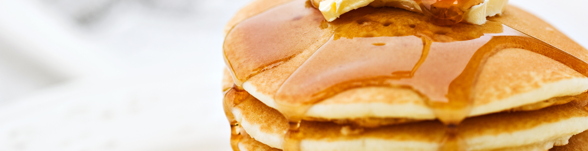

Pancakes Recipe
Pancakes are flat cakes made out of a batter of different ingredients
usually found in one's kitchen already such as flour, eggs, milk, and baking powder.
This recipe produces thick and fluffy golden brown pancakes done in a total of 20 minutes.
Ingredients:
- Flour
- Baking Powder
- Sugar
- Salt
- Milk
- Butter
- Egg
Method:
- Sift the dry ingredients together.
- Add the wet ingredients and stir together.
- Scoop the batter onto a hot griddle or pan.
- Cook for two to three minutes, then flip.
- Continue cooking until brown on both sides.